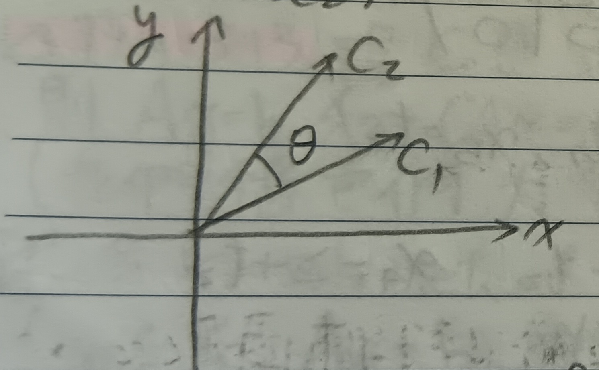
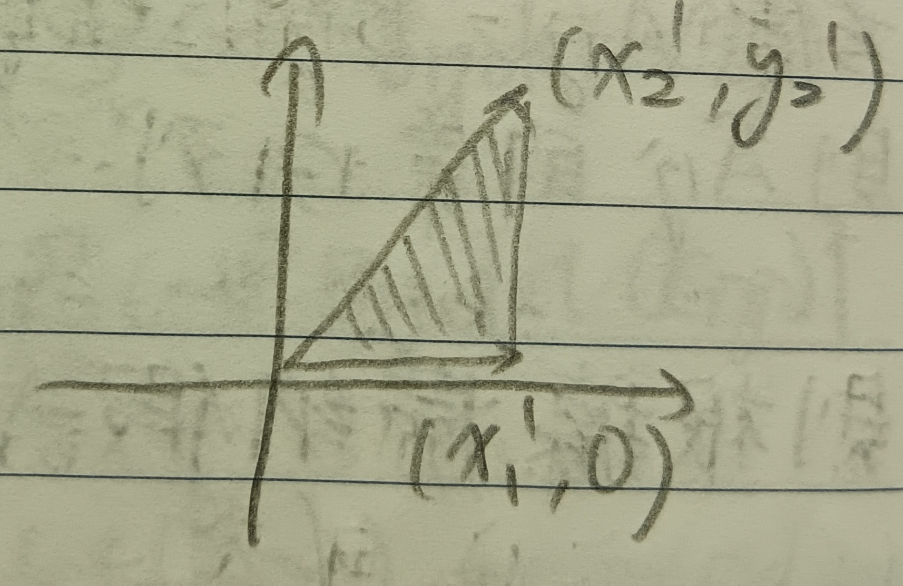

這份筆記是關於行列式的定義與性質。
這裡的行與列依循的是台灣的翻譯習慣，即行對應到英文的Column，而列對應到英文的Row。
二階行列式
定義 1：二階行列式 (Determinant of Order 2)
給定 \[ A=\left( \begin{array}{cc} a & b\\ c & d \end{array} \right)\in M_{2\times 2}(F) \] 我們將這個矩陣的行列式定義為 \[ \det(A)=ad-bc \]
性質 1-1
令\(u,v,w\)是\(1\times 2\)的列，\(k\in F\)，則 \[ \begin{aligned} \det\left( \begin{array}{c} u+kv\\ w \end{array} \right)&=\det\left( \begin{aligned} &u\\ &w \end{aligned} \right)+k\det\left( \begin{aligned} &v\\ &w \end{aligned} \right)\\ \det\left( \begin{array}{c} w\\ u+kv \end{array} \right)&=\det\left( \begin{aligned} &w\\ &u \end{aligned} \right)+k\det\left( \begin{aligned} &w\\ &v \end{aligned} \right) \end{aligned} \]
證明：直接驗算即可。QED
性質 1-2
給定\(A\in M_{2\times 2}(F)\)，則\(\det(A)\neq 0\) iff. \(A\)可逆，且 \[ A^{-1}=\frac{1}{\det A}\left( \begin{array}{cc} d & -b\\ -c & a \end{array} \right) \]
證明：我們分成兩部分證明。
「\(\Rightarrow\)」：直接驗算上述的\(A^{-1}\)是反矩陣即可。
「\(\Leftarrow\)」：若\(A\)可逆但\(\det(A)=0\)，則\(ad=bc\)，故兩列會是線性相依的，這導致\(\mbox{rank}(A)\neq 2\)。這與這裡的性質1-6是矛盾的。QED
定理 2
考慮 \[ A=\left( \begin{array}{cc} x_1 & y_1\\ x_2 & y_2 \end{array} \right) \] 並令\(c_1=(x_1,y_1), c_2=(x_2,y_2)\)為\(xy\)平面上的兩點，\(\theta\)為\(\vec{c_1}\)與\(\vec{c_2}\)所夾的銳角。並且我們用如參考下圖1與圖2的方式定義函數\(O\left( \begin{aligned} &c_1\\ &c_2 \end{aligned} \right)\)：在圖1中，\(c_1\)在\(c_2\)右側，令\(O\left( \begin{aligned} &c_1\\ &c_2 \end{aligned} \right)=1\)；而在圖2中，\(c_1\)在\(c_2\)左側，令\(O\left( \begin{aligned} &c_1\\ &c_2 \end{aligned} \right)=-1\)。
令\(\mbox{Area}(A)\)為原點和\(\vec{c_1},\vec{c_2}\)所圍成的三角形面積，則 \[ \det(A)=2O(A)\mbox{Area}(A) \]
證明：令\(z_1=x_1+iy_1\), \(z_2=x_2+iy_2\), \(i=\sqrt{-1}\)。則 \[ \det(A)=x_1y_2-x_2y_1=-\mbox{Im}(z_1\overline{z_2}) \] 對於某個角度\(\alpha\)，令 \[ \begin{aligned} z_1'&=e^{i\alpha}z_1=x_1'+iy_1'\\ z_2'&=e^{i\alpha}z_2=x_2'+iy_2' \end{aligned} \] 則 \[ \begin{aligned} \det\left( \begin{array}{cc} x_1' & y_1'\\ x_2' & y_2' \end{array} \right)&=-\mbox{Im}\left(z_1'\overline{z_2'}\right)\\ &=-\mbox{Im}(e^{i\alpha}z_1 e^{-i\alpha}\overline{z_2})\\ &=-\mbox{Im}(z_1\overline{z_2})=\det(A) \end{aligned} \] 故行列式的值不受旋轉影響，我們決定\(\alpha\)以使\(y_1'=0\)(見下圖3)。
則 \[ \begin{aligned} \det(A)&=\det\left( \begin{array}{cc} x_1' & y_1'\\ x_2' & y_2' \end{array} \right)\\ &=x_1'y_2'\\ &=2O\left( \begin{array}{cc} x_1' & y_1'\\ x_2' & y_2' \end{array} \right)\mbox{Area}\left( \begin{array}{cc} x_1' & y_1'\\ x_2' & y_2' \end{array} \right)\\ &=2O\left( \begin{array}{cc} x_1 & y_1\\ x_2 & y_2 \end{array} \right)\mbox{Area}\left( \begin{array}{cc} x_1 & y_1\\ x_2 & y_2 \end{array} \right) \end{aligned} \] QED
n階行列式
定義 3：n階行列式 (Determinant of Order n)
我們使用遞迴來定義\(n\times n\)矩陣的行列式。考慮\(A\in M_{n\times n}(F)\)，我們令\(\widetilde{A_{ij}}\in M_{(m-1)\times(n-1)}(F)\)是\(A\)把第\(i\)列與第\(j\)行刪去後得到的矩陣，則對於\(A\in M_{n\times n}(F)\)來說，我們定義 \[ \det(A)=\left\{ \begin{aligned} A_{11}&,\mbox{ if }n=1\\ \sum_{j=1}^m(-1)^{1+j}A_{ij}\det(\widetilde{A_{ij}})&,\mbox{ otherwise} \end{aligned} \right. \]
定義 3-1：輔因子 (Cofactor)
我們將\((-1)^{i+j}\det(\widetilde{A_{ij}})\)稱為\(A\)第\(i\)列第\(j\)行的輔因子，記做\(c_{ij}\)。
例 3-2
給定 \[ A=\left( \begin{array}{ccc} 1 & 4 & 7\\ 2 & 5 & 8\\ 3 & 6 & 9 \end{array} \right) \] 則 \[ \det(A)=1\times\det\left( \begin{array}{cc} 5 & 8\\ 6 & 9 \end{array} \right)-4\times\det\left( \begin{array}{cc} 2 & 8\\ 3 & 9 \end{array} \right)+7\times\det\left( \begin{array}{cc} 2 & 5\\ 3 & 6 \end{array} \right) \]
定理 4
令\(a_1,\cdots,a_{r-1},u,v,a_{r+1},\cdots,a_n\)是列向量，並給定\(k\in F\)，則 \[ \det\left( \begin{array}{c} a_1\\ \vdots\\ a_{r-1}\\ u+kv\\ a_{r+1}\\ \vdots\\ a_n \end{array} \right)=\det\left( \begin{array}{c} a_1\\ \vdots\\ a_{r-1}\\ u\\ a_{r+1}\\ \vdots\\ a_n \end{array} \right)+k\det\left( \begin{array}{c} a_1\\ \vdots\\ a_{r-1}\\ v\\ a_{r+1}\\ \vdots\\ a_n \end{array} \right) \]
證明：我們對\(n\)做數學歸納法。
1. \(n=1\)時，結論是顯然的。
2.
假設對於\(1,2,\cdots,n-1\)定理都成立，則令 \[
A=\left(
\begin{array}{c}
a_1\\
\vdots\\
a_{r-1}\\
u+kv\\
a_{r+1}\\
\vdots\\
a_n
\end{array}
\right)
\] 若\(r=1\)，則用行列式的定義直接處理即可。若\(r>1\)，則令 \[
B=\left(
\begin{array}{c}
a_1\\
\vdots\\
a_{r-1}\\
u\\
a_{r+1}\\
\vdots\\
a_n
\end{array}
\right), C=\left(
\begin{array}{c}
a_1\\
\vdots\\
a_{r-1}\\
v\\
a_{r+1}\\
\vdots\\
a_n
\end{array}
\right)
\] 並令 \[
u=(b_1,\cdots,b_n), v=(c_1,\cdots,c_n)
\] 考慮\(\widetilde{A_{1j}}\),
\(\widetilde{B_{1j}}\), \(\widetilde{C_{1j}}\)，則 \[
\begin{aligned}
\widetilde{A_{1j}}\mbox{的第}r-1\mbox{列}&=(b_1+kc_1,\cdots,b_{j-1}+kc_{j-1},b_{j+1}+kc_{j+1},\cdots,b_n+kc_n)\\
&=\widetilde{B_{1j}}\mbox{的第}r-1\mbox{列}+k\times\widetilde{C_{1j}}\mbox{的第}r-1\mbox{列}
\end{aligned}
\] 然而\(\widetilde{A_{1j}}\),
\(\widetilde{B_{1j}}\), \(\widetilde{C_{1j}}\)都是\((n-1)\times(n-1)\)矩陣，故由歸納假設有
\[
\det(\widetilde{A_{1j}})=\det(\widetilde{B_{1j}})+k\det(\widetilde{C_{1j}})
\] 則 \[
\begin{aligned}
\det(A)&=\sum_{j=1}^n(-1)^{1+j}A_{1j}\det(\widetilde{A_{1j}})\\
&=\sum_{j=1}^n(-1)^{1+j}A_{1j}(\det(\widetilde{B_{1j}})+k\det(\widetilde{C_{1j}}))\\
&=\det(B)+k\det(C)
\end{aligned}
\] (這裡因為\(r>1\)，故\(A_{1j}=B_{1j}=C_{1j}\))。QED
註記 4-1
若\(A\in M_{n\times
n}(F)\)有一列全是\(0\)，則\(\det(A)=0\)。
證明：由定理4，有 \[ \det\left( \begin{array}{c} \vdots\\ 0\\ \vdots \end{array} \right)+\det\left( \begin{array}{c} \vdots\\ 0\\ \vdots \end{array} \right)=\det\left( \begin{array}{c} \vdots\\ 0\\ \vdots \end{array} \right) \] 故有 \[ \det\left( \begin{array}{c} \vdots\\ 0\\ \vdots \end{array} \right)=0 \] QED
引理 5
給定\(B\in M_{n\times n}(F)\), \(n\geq 2\)。若\(B\)的第\(i\)列是\(e_k\)，其中 \[ e_k=(0,\cdots,0,\underbrace{1}_{\mbox{第}k\mbox{個}},0,\cdots,0) \] 則 \[ \det B=(-1)^{i+k}\det(\widetilde{B_{ik}}) \]
證明：我們對\(n\)做歸納法。
1. \(n=2\)時，結論是顯然的。
2. 假設當\(2,3,\cdots,n-1\)時定理成立，則令\(B\in M_{n\times n}(F)\), \(n\geq 2\)且其第\(i\)列是\(e_k\)。若\(i=1\)，則直接用行列式的定義處理即可。而若\(i>1\)，考慮\(\widetilde{B_{1j}}\)，其第\(i-1\)列是 \[
\left\{
\begin{aligned}
e_{k-1}&,\mbox{ if }j<k\\
0&,\mbox{ if }j=k\\
e_k&,\mbox{ if }j>k
\end{aligned}
\right.
\] 由歸納假設和註記4-1，我們知道 \[
\det(\widetilde{B_{1j}})=\left\{
\begin{aligned}
(-1)^{(i-1)+(k-1)}\det(C_{ij})&,\mbox{ if }j<k\\
0&,\mbox{ if }j=k\\
(-1)^{(i-1)+k}\det(C_{ij})&,\mbox{ if }j>k
\end{aligned}
\right.
\] 其中\(C_{ij}=\widetilde{(\widetilde{B_{1j}})_{ik}}\)為\((n-2)\times
(n-2)\)矩陣(下圖4把紅色和黑色都刪掉後就是\(C_{ij}\)了)。
故 \[ \begin{aligned} \det B&=\sum_{j=1}^n(-1)^{1+j}B_{1j}\det(\widetilde{B_{1j}})\\ &=\sum_{j<k}(-1)^{1+j}B_{1j}[(-1)^{(i-1)+(k-1)}\det(C_{ij})]+\sum_{j>k}(-1)^{1+j}B_{1j}[(-1)^{(i-1)+k}\det(C_{ij})]\\ &=(-1)^{i+k}\left[\sum_{j<k}(-1)^{1+j}B_{1j}\det(C_{ij})+\sum_{j>k}(-1)^jB_{1j}\det(C_{ij})\right]\\ &=(-1)^{i+k}\det(\widetilde{B_{ik}}) \end{aligned} \] (最後一個等號用定義3慢慢檢查即可)。QED
定理 6
給定\(A\in M_{n\times n}(F)\)，則對任何\(1\leq i\leq n\)，都有 \[ \det(A)=\sum_{j=1}^n(-1)^{i+j}A_{ij}\det(\widetilde{A_{ij}}) \]
證明：\(i=1\)時就是原本的定義(定義3)，而當\(i>1\)時，有 \[ A\mbox{的第}i\mbox{列}=\sum_{j=1}^n A_{ij}e_j \] (這裡\(e_j\)的定義和引理5中是類似的)令\(B_j\)為把\(A\)的第\(i\)列用\(e_j\)取代的矩陣。故 \[ \begin{aligned} \det A&=\sum_{j=1}^n A_{ij}\det(B_j)\mbox{ (定理4)}\\ &=\sum_{j=1}^n(-1)^{i+j}A_{ij}\det(\widetilde{A_{ij}})\mbox{ (引理5)} \end{aligned} \] QED
註記 6-1
若\(A\)有兩相同列，則\(\det(A)=0\)。
證明：考慮\(n\times n\)矩陣\(A\)，我們對\(n\)做數學歸納法。
1. \(n=2\)時，結論是顯然的。
2. \(n\geq 3\)時，假設定理在\(1,2,\cdots,n-1\)都成立。我們選擇\(i\)使得第\(i\)列不是相同的那兩列之一。則\(\widetilde{A_{ij}}\)是\((n-1)\times(n-1)\)矩陣，且\(\widetilde{A_{ij}}\)有兩相同列，由歸納假設知\(\det(\widetilde{A_{ij}})=0\)，故由定理6知
\[
\det A=\sum_{j=1}^n(-1)^{i+j}A_{ij}\det(\widetilde{A_{ij}})=0
\] QED
定理 7
令\(B\)是把\(A\)的某兩列交換後的矩陣，則 \[ \det(A)=-\det(B) \]
證明：由註記6-1有 \[ 0=\det\left( \begin{array}{c} \vdots\\ a_r+a_s\\ \vdots\\ a_r+a_s\\ \vdots \end{array} \right)=\underbrace{\det\left( \begin{array}{c} \vdots\\ a_r\\ \vdots\\ a_r\\ \vdots \end{array} \right)}_{=0}+\underbrace{\det\left( \begin{array}{c} \vdots\\ a_s\\ \vdots\\ a_s\\ \vdots \end{array} \right)}_{=0}+\det\left( \begin{array}{c} \vdots\\ a_r\\ \vdots\\ a_s\\ \vdots \end{array} \right)+\det\left( \begin{array}{c} \vdots\\ a_s\\ \vdots\\ a_r\\ \vdots \end{array} \right) \] 故 \[ \det\left( \begin{array}{c} \vdots\\ a_r\\ \vdots\\ a_s\\ \vdots \end{array} \right)=-\det\left( \begin{array}{c} \vdots\\ a_s\\ \vdots\\ a_r\\ \vdots \end{array} \right) \] QED
定理 8
令\(B\)是把\(A\)的某一列乘以\(k\)倍後加到另一列上的矩陣，則 \[ \det(A)=\det(B) \]
證明：由定理4有 \[ \det(B)=\det(A)+k\det\left( \begin{array}{c} \vdots\\ a_r\mbox{ (第}r\mbox{列)}\\ \vdots\\ a_r\mbox{ (第}s\mbox{列)}\\ \vdots \end{array} \right)=\det(A)\mbox{ (註記6-1)} \] QED
註記 8-1
給定\(A\in M_{n\times
n}(F)\)，若\(\mbox{rank}(A)<n\)，則\(\det(A)=0\)。
證明：由\(\mbox{rank}(A)<n\)知\(A\)有某幾列有線性關係，則可以用這裡的定義1中的第3.項基本列運算把\(A\)的某一列變成\(0\)。故由定理8知 \[ \det(A)=\det\left( \begin{array}{c} \vdots\\ 0\\ \vdots \end{array} \right)=0 \] QED
註記 8-2
我們這裡可以整理這裡的定義1中三種基本列運算和行列式的關係。
1. 若\(A\xrightarrow{1.}B\)，則\(\det(B)=-\det(A)\)。
2. 若\(A\xrightarrow{2., \times k}B\)，則\(\det(B)=k\det(A)\)。
3. 若\(A\xrightarrow{3.}B\)，則\(\det(B)=\det(A)\)。
定理 9
我們有 \[ \det(AB)=\det(A)\det(B) \]
證明：若\(A\)是基本矩陣，則由註記8-2有 \[
\det(AB)=\det(A)\det(B)
\] 而若\(A\in M_{n\times
n}(F)\)且\(\mbox{rank}(A)<n\)，則\(\det(A)=0\)。則由這裡的定理11，有
\[
\mbox{rank}(AB)\leq\mbox{rank}(A)<n
\] 故\(\det(AB)=0=\det(A)\det(B)\)。
而若\(\mbox{rank}(A)=n\)，則\(A\)是一連串基本矩陣的積(見這裡的註記12)，則由上述知
\[
\det(AB)=\det(A)\det(B)
\] QED
註記 9-1
若\(n\times n\)矩陣\(A\)可逆，則\(\det(A)\neq 0\)。
證明：我們分成兩部分證明。
「\(\Rightarrow\)」：我們有\(AA^{-1}=I\)，故 \[
\det(A)\det(A^{-1})=1
\] 即\(\det(A)\neq 0\)。
「\(\Leftarrow\)」：若\(A\)不可逆，則\(\mbox{rank}(A)<n\)，則\(\det(A)=0\)。QED
定理 10
給定\(A\in M_{n\times n}(F)\)，則 \[ \det(A)=\det(A^t) \]
證明：由這裡的推論10-2知\(\mbox{rank}(A)=\mbox{rank}(A^t)\)。若\(\mbox{rank}(A)=\mbox{rank}(A^t)<n\)，則 \[ \det(A)=\det(A^t)=0 \] 而若\(\mbox{rank}(A)=n\)，則\(A\)可以表為基本矩陣的積，如 \[ A=E_mE_{m-1}\cdots E_1 \] 則 \[ A^t=(E_mE_{m-1}\cdots E_1)^t=E_1^tE_2^t\cdots E_m^t \] 而由定理9知 \[ \det(A^t)=\det(E_1^t)\det(E_2^t)\cdots\det(E_m^t) \] 而很輕易的可以知道對於基本矩陣\(E\)有\(\det(E)=\det(E^t)\)，故 \[ \det(A)=\det(A^t) \] QED
行列式的特徵化定義
定義 11：n-線性 (n-Linear)
我們說函數\(\delta:M_{n\times n}(F)\to F\)是\(n\)-線性的，若對所有\(k\in F\)，有 \[ \delta\left( \begin{array}{c} a_1\\ \vdots\\ u+kv\\ \vdots\\ a_n \end{array} \right)=\delta\left( \begin{array}{c} a_1\\ \vdots\\ u\\ \vdots\\ a_n \end{array} \right)+k\delta\left( \begin{array}{c} a_1\\ \vdots\\ v\\ \vdots\\ a_n \end{array} \right) \]
定義 12：交錯 (Alternating)
考慮\(n\)-線性的函數\(\delta:M_{n\times n}(F)\to F\)。我們說\(\delta\)是交錯的，若當\(A\)有兩相鄰列相同時，總有\(\delta(A)=0\)。
註記 13
給定\(n\)-線性且交錯的函數\(\delta:M_{n\times n}(F)\to F\)。則令\(B\)是\(A\)交換兩相鄰列後的矩陣，由定義有\(\delta(B)=-\delta(A)\)。從而得知若\(B\)是\(A\)交換任意兩列後的矩陣，則\(\delta(B)=-\delta(A)\)(相差\(m\)列間的兩列互換等於要互換相鄰列\((2m-1)\)次)。於是知若\(A\)有兩相同列，則\(\delta(A)=0\)。
然後，若\(B\)是\(A\)經過這裡的定義1的第3.項基本列運算後的矩陣，則有
\[
\delta(B)=\delta(A)
\] 於是我們知道若給定\(M\in M_{n\times
n}(F)\)且\(\mbox{rank}(M)<n\)，則\(\delta(M)=0\)。
註記 13-1
我們可以整理與這裡的定義1的三種基本列運算對應的三種基本矩陣的\(\delta\)值。
1. 令\(E_1\)是第一種基本列運算的基本矩陣，則\(\delta(E_1)=-\delta(I)\)。
2. 令\(E_2\)是第二種基本列運算的基本矩陣，則\(\delta(E_2)=k\delta(I)\)。
3. 令\(E_3\)是第三種基本列運算的基本矩陣，則\(\delta(E_3)=\delta(I)\)。
定理 14
給定\(n\)-線性且交錯的函數\(\delta:M_{n\times n}(F)\to F\)。若\(\delta(I)=1\)，則對所有\(A,B\in M_{n\times n}(F)\)，有 \[ \delta(AB)=\delta(A)\delta(B) \]
證明：\(mbox{rank}(A)<n\)的狀況和\(A\)是基本矩陣的狀況在註記13中說明過了。若\(\mbox{rank}(A)=n\)，則可以把\(A\)寫成一串基本矩陣的積，形如 \[ A=E_mE_{m-1}\cdots E_1 \] 則 \[ \begin{aligned} \delta(AB)&=\delta(E_mE_{m-1}\cdots E_1B)\\ &=\delta(E_m)\delta(E_{m-1})\cdots\delta(E_1)\delta(B)\\ &=\delta(E_mE_{m-1}\cdots E_1)\delta(B)\\ &=\delta(A)\delta(B) \end{aligned} \] QED
定理 15：行列式的特徵化 (Characterization of Determinant)
給定\(n\)-線性且交錯的函數\(\delta:M_{n\times n}(F)\to F\)，且\(\delta(I)=1\)，則\(\delta\)是行列式函數。
證明：給定\(A\in M_{n\times n}(F)\)。若\(\mbox{rank}(A)<n\)，則由註記13知 \[ \delta(A)=0=\det(A) \] 而若\(\mbox{rank}(A)=n\)，則可以把\(A\)寫成一串基本矩陣的積，形如 \[ A=E_mE_{m-1}\cdots E_1 \] 由註記13知當\(E\)是基本矩陣時，有 \[ \delta(E)=\det(E) \] 故由定理14， \[ \begin{aligned} \delta(A)&=\delta(E_m)\delta(E_{m-1})\cdots\delta(E_1)\\ &=\det(E_m)\det(E_{m-1})\cdots\det(E_1)\\ &=\det(E_mE_{m-1}\cdots E_1)\\ &=\det(A) \end{aligned} \] 於是，可以確定\(\delta\)就是行列式。QED
行列式的置換定義
定義 16：置換 (Permutation)
我們稱一對一函數\(\sigma:\{1,2,\cdots,n\}\to\{1,2,\cdots,n\}\)為一個置換。我們把所有\(\{1,2,\cdots,n\}\to\{1,2,\cdots,n\}\)的置換的集合記為\(S_n\)。
定義 17：置換的奇偶性 (Parity of a Permutation)
給定\(n\)個相異數\(x_1,x_2,\cdots,x_n\)，我們定義 \[ \Delta=\prod_{1\leq i<j\leq n}(x_i-x_j) \] 而對於置換\(\sigma\in S_n\)，我們令 \[ \sigma(\Delta)=\prod_{1\leq i<j\leq n}(x_{\sigma(i)}-x_{\sigma(j)}) \] 易知\(\sigma(\Delta)=\pm\Delta\)。我們令 \[ \epsilon(\sigma)=\left\{ \begin{aligned} +1&,\mbox{ if }\sigma(\Delta)=\Delta\\ -1&,\mbox{ if }\sigma(\Delta)=-\Delta \end{aligned} \right. \] 我們稱\(\epsilon(\sigma)=+1\)的置換為偶置換，而稱\(\epsilon(\sigma)=-1\)的置換為奇置換。
註記 17-1
很容易可以驗證 \[ \epsilon(\sigma_1\sigma_2)=\epsilon(\sigma_1)\epsilon(\sigma_2) \]
定理 18
考慮函數\(D:M_{n\times n}(F):\to
F\)為 \[
D(A)=\sum_{\sigma\in
S_n}\epsilon(\sigma)A_{1\sigma(1)}A_{2\sigma(2)}\cdots A_{n\sigma(n)}
\] 則\(D\)是行列式函數。
證明：首先，很容易可以發現\(D\)是\(n\)-線性的。
其次，我們有 \[
D(I)=\epsilon(\sigma)A_{11}A_{22}\cdots A_{nn}
\] 其中\(\sigma\)是不變置換(即什麼都不換)，故顯然\(\epsilon(\sigma)=1\)，則 \[
D(I)=\underbrace{1\times 1\times 1\cdots\times 1}_{n\mbox{個}}=1
\] 接著，令\(B\)是把\(A\)第\(i\)列和第\(j\)列互換的矩陣，且\(\alpha\in S_n\)是只交換\(i\)和\(j\)的置換，則顯然\(\epsilon(\alpha)=-1\)。則 \[
\begin{aligned}
D(B)&=\sum_{\sigma\in S_n}\epsilon(\sigma)A_{1\sigma(1)}\cdots
A_{j\sigma(i)}\cdots A_{i\sigma(j)}\cdots A_{n\sigma(n)}\\
&=\sum_{\sigma\in
S_n}\epsilon(\alpha)\epsilon(\alpha)\epsilon(\sigma)A_{1(\sigma\alpha)(1)}\cdots
A_{j(\sigma\alpha)(j)}\cdots A_{i(\sigma\alpha)(i)}\cdots
A_{n(\sigma\alpha)(n)}\\
&=\sum_{\sigma\in
S_n}(-1)\epsilon(\sigma\alpha)A_{1(\sigma\alpha)(1)}\cdots
A_{n(\sigma\alpha)(n)}
\end{aligned}
\] 而當\(\sigma\)遍歷\(S_n\)時，\(\sigma\alpha\)也將遍歷\(S_n\)，故\(D(B)-D(A)\)。於是可知\(D\)是交錯的。
由定理15，我們可以知道\(D\)是行列式函數。QED